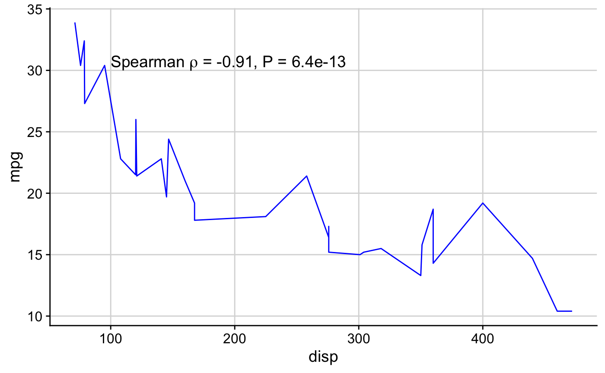
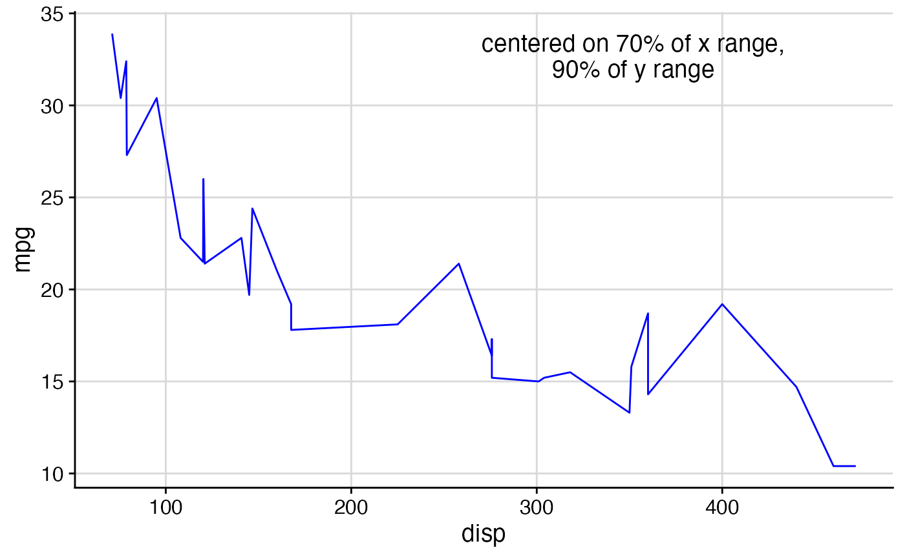
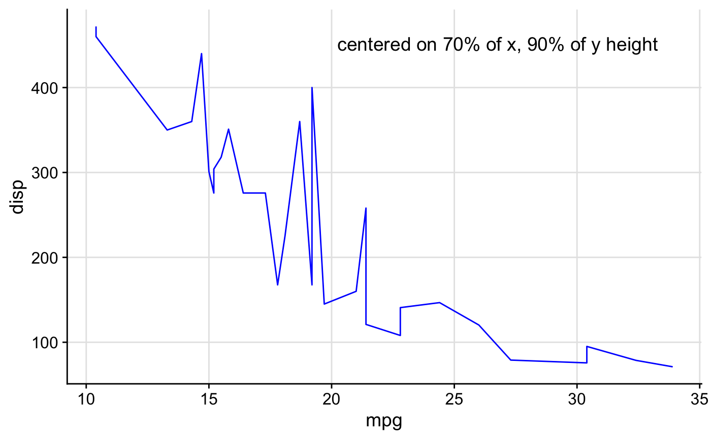
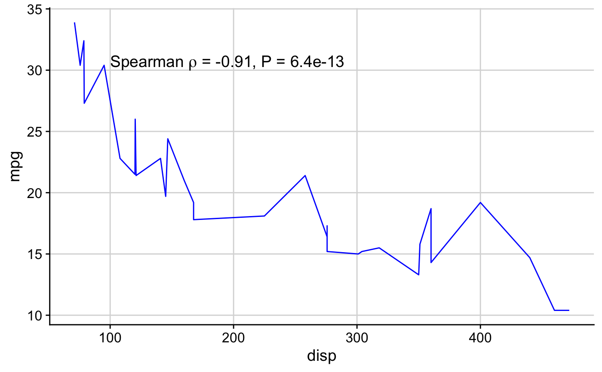
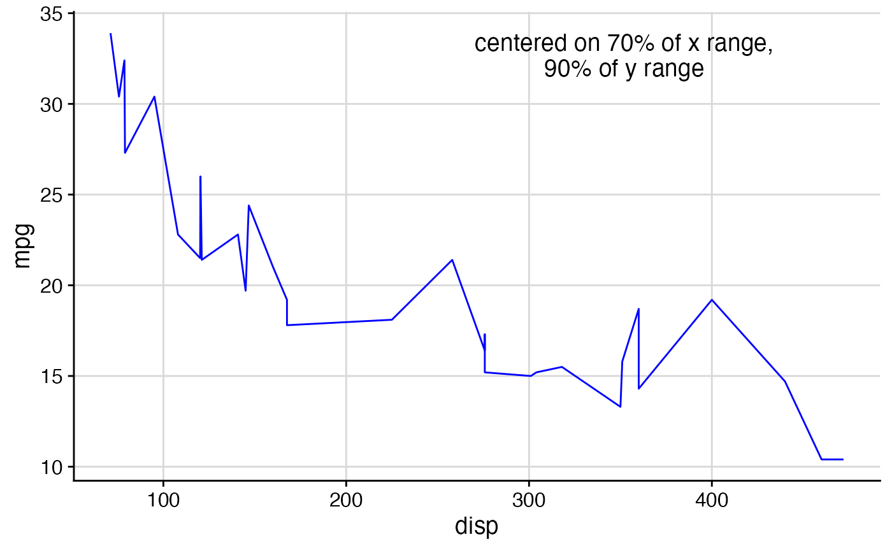
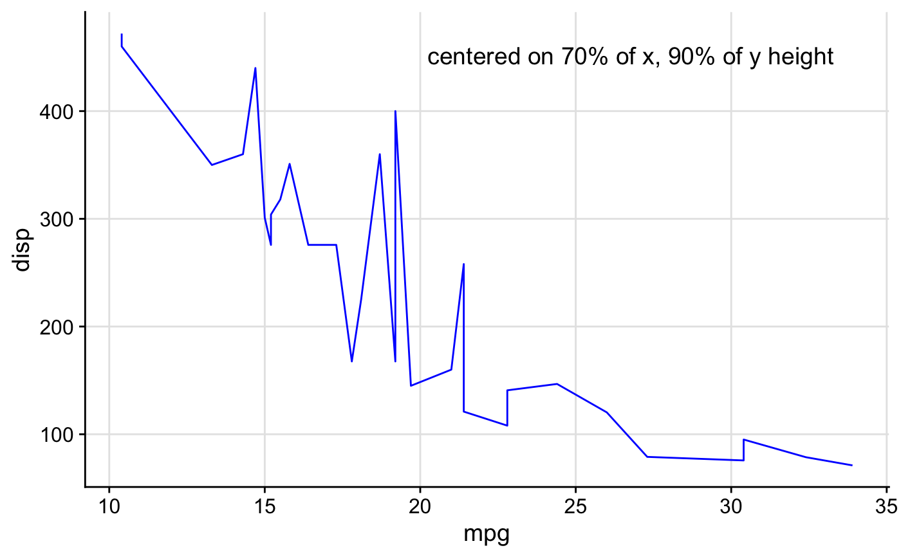

This function can draw either a character string or mathematical expression at the given
coordinates. It works both on top of ggdraw and directly with ggplot, depending
on which coordinate system is desired (see examples).
draw_label(
label,
x = 0.5,
y = 0.5,
hjust = 0.5,
vjust = 0.5,
fontfamily = "",
fontface = "plain",
color = "black",
size = 14,
angle = 0,
lineheight = 0.9,
alpha = 1,
colour
)Arguments
- label
String or plotmath expression to be drawn.
- x
The x location (origin) of the label.
- y
The y location (origin) of the label.
- hjust
Horizontal justification. Default = 0.5 (centered on x). 0 = flush-left at x, 1 = flush-right.
- vjust
Vertical justification. Default = 0.5 (centered on y). 0 = baseline at y, 1 = ascender at y.
- fontfamily
The font family
- fontface
The font face ("plain", "bold", etc.)
- color, colour
Text color
- size
Point size of text
- angle
Angle at which text is drawn
- lineheight
Line height of text
- alpha
The alpha value of the text
Details
By default, the x and y coordinates specify the center of the text box. Set hjust = 0, vjust = 0 to specify
the lower left corner, and other values of hjust and vjust for any other relative location you want to
specify.
See also
Examples
library(ggplot2)
# setup plot and a label (regression description)
p <- ggplot(mtcars, aes(disp, mpg)) +
geom_line(color = "blue") +
theme_half_open() +
background_grid(minor = 'none')
out <- cor.test(mtcars$disp, mtcars$mpg, method = 'sp', exact = FALSE)
label <- substitute(
paste("Spearman ", rho, " = ", estimate, ", P = ", pvalue),
list(estimate = signif(out$estimate, 2), pvalue = signif(out$p.value, 2))
)
# Add label to plot, centered on {x,y} (in data coordinates)
p + draw_label(label, x = 300, y = 32)
 # Add label to plot in data coordinates, flush-left at x, baseline at y.
p + draw_label(label, x = 100, y = 30, hjust = 0, vjust = 0)

# Add labels via ggdraw. Uses ggdraw coordinates.
# ggdraw coordinates default to xlim = c(0, 1), ylim = c(0, 1).
ggdraw(p) +
draw_label("centered on 70% of x range,\n90% of y range", x = 0.7, y = 0.9)

ggdraw(p) +
draw_label("bottom left at (0, 0)", x = 0, y = 0, hjust = 0, vjust = 0) +
draw_label("top right at (1, 1)", x = 1, y = 1, hjust = 1, vjust = 1) +
draw_label("centered on (0.5, 0.5)", x = 0.5, y = 0.5, hjust = 0.5, vjust = 0.5)

# Add label to plot in data coordinates, flush-left at x, baseline at y.
p + draw_label(label, x = 100, y = 30, hjust = 0, vjust = 0)

# Add labels via ggdraw. Uses ggdraw coordinates.
# ggdraw coordinates default to xlim = c(0, 1), ylim = c(0, 1).
ggdraw(p) +
draw_label("centered on 70% of x range,\n90% of y range", x = 0.7, y = 0.9)

ggdraw(p) +
draw_label("bottom left at (0, 0)", x = 0, y = 0, hjust = 0, vjust = 0) +
draw_label("top right at (1, 1)", x = 1, y = 1, hjust = 1, vjust = 1) +
draw_label("centered on (0.5, 0.5)", x = 0.5, y = 0.5, hjust = 0.5, vjust = 0.5)
